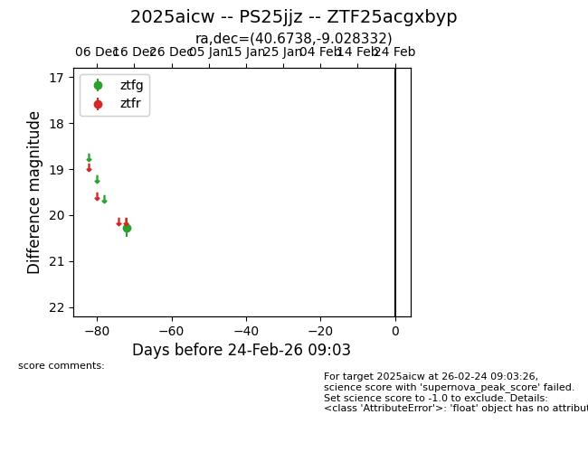
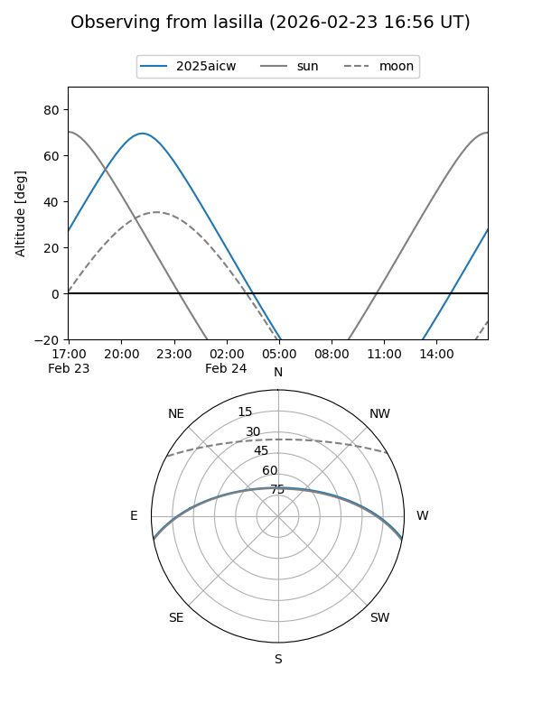
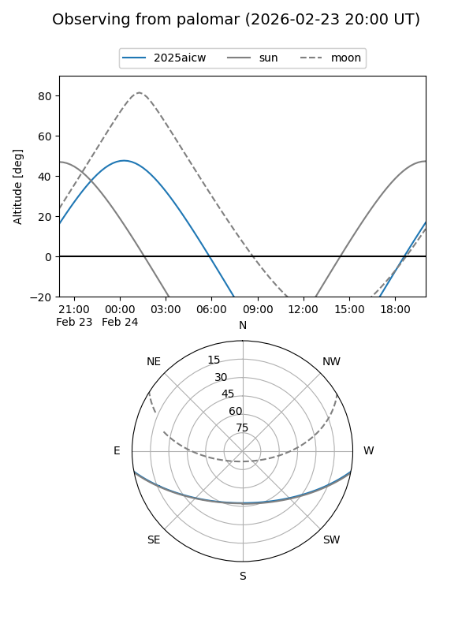

2025aicw
Target 2025aicw at 2025-12-31 17:00
Aliases and brokers:
FINK:
Lasair:
ALeRCE:
TNS:
YSE:
alt names
ZTF25acgxbyp (ztf,fink_ztf)
2025aicw (tns,yse)
PS25jjz (panstarrs)
Coordinates:
equatorial (ra, dec) = 40.6738,-9.02833
equatorial (HMS+DMS) = 02:42:41.71,-09:01:42.00
galactic (l, b) = (183.6280,-58.09925)
Flags:
Photometry:
last ztfg=20.27
1 ztfg detections
Lightcurve

Visibility


Additional plots